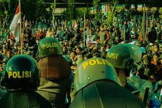
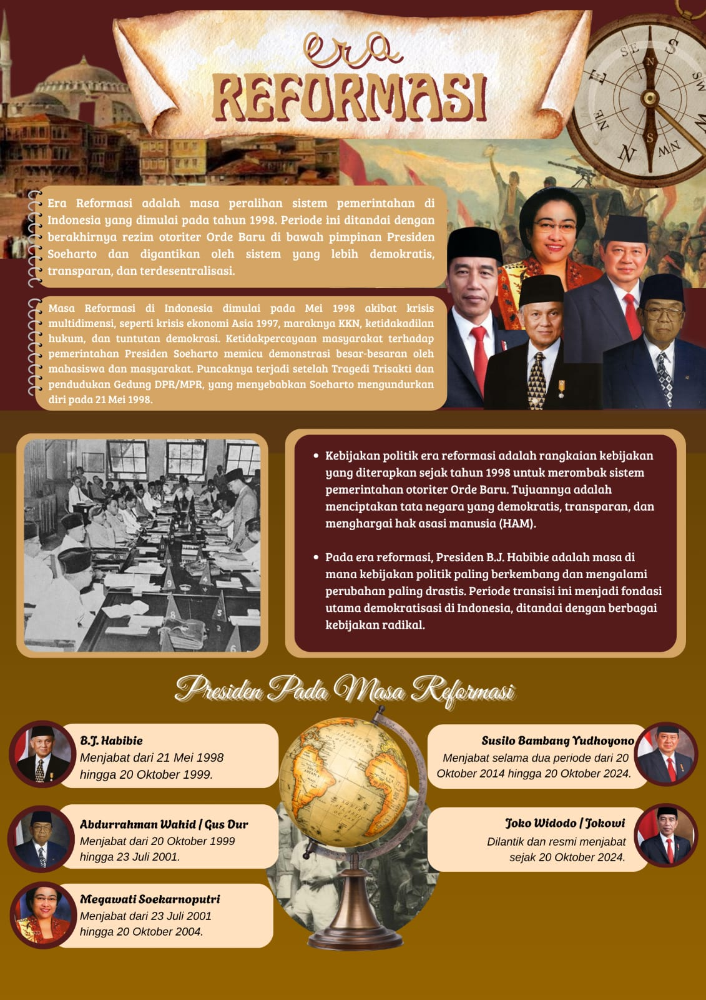
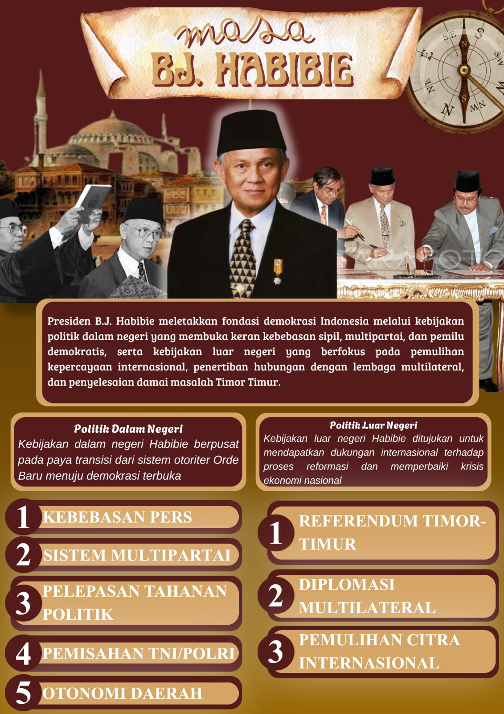
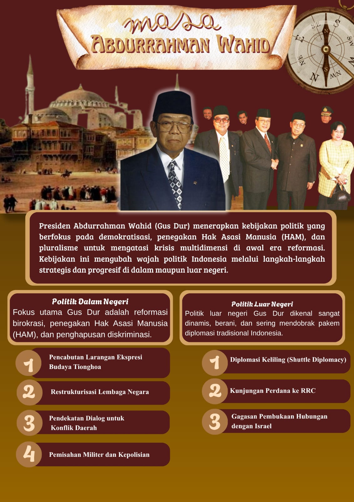
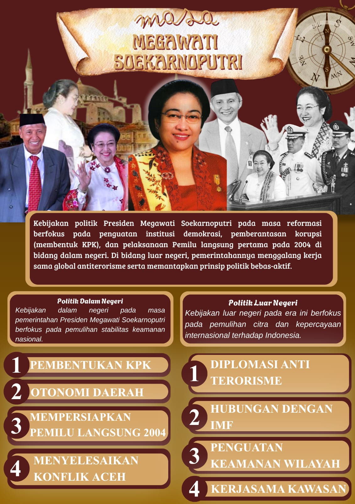
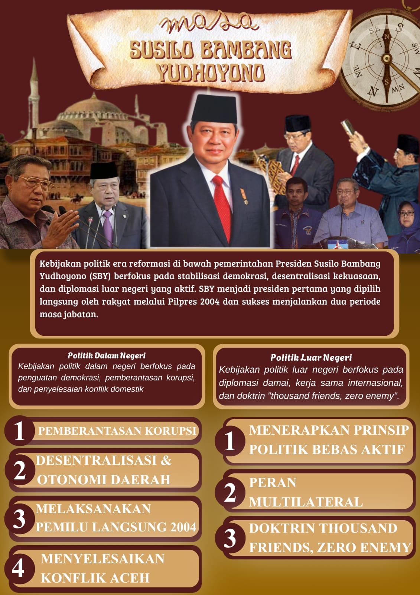
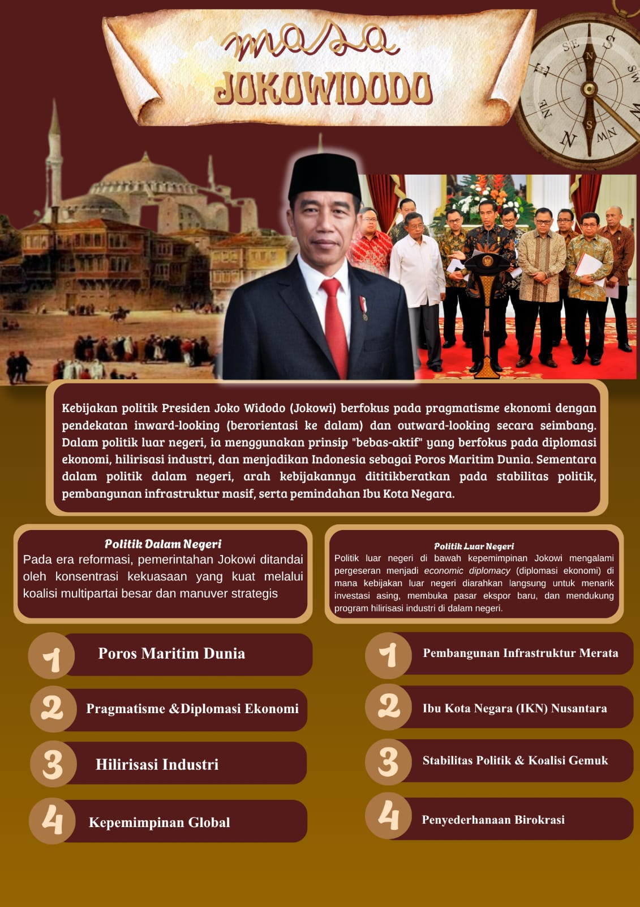

KEBIJAKAN POLITIK ERA REFORMASI
Analisis interaktif transisi kekuasaan, kebebasan pers, pemilu demokratis, dan reformasi struktural pemerintahan Indonesia pasca 1998.


PETA PEMIMPIN REFORMASI
Pilih salah satu Presiden Republik Indonesia untuk membuka arsip kebijakan politik yang membawa perubahan besar bagi negeri.

Prof. Dr. B. J. Habibie
Periode: 21 Mei 1998 – 20 Oktober 1999
Kebijakan Politik Utama
Kebebasan Pers (Pencabutan SIUPP)
Mencabut kewajiban Surat Izin Usaha Penerbitan Pers (SIUPP), yang membuat media massa terbebas dari ancaman pembredelan dan sensor pemerintah.
Sistem Multipartai (UU No. 2 Tahun 1999)
Mengesahkan UU No. 2 Tahun 1999 yang menghapus monopoli satu partai dan melegalkan sistem multipartai, memungkinkan 48 partai politik bersaing pada Pemilu 1999.
Pelepasan Tahanan Politik Era Orde Baru
Membebaskan sejumlah tokoh dan tahanan politik era Orde Baru yang sebelumnya dipenjara karena pemikiran atau aktivitas oposisi yang dianggap mengancam.
Pemisahan TNI/Polri (Dwifungsi)
Memulai proses reformasi institusi keamanan dengan memisahkan Kepolisian Republik Indonesia (Polri) dari tubuh Angkatan Bersenjata Republik Indonesia (ABRI) untuk menghapus peran politik praktis militer.
Otonomi Daerah (UU No. 22 & 25 Tahun 1999)
Mengesahkan UU No. 22 Tahun 1999 tentang Pemerintahan Daerah dan UU No. 25 Tahun 1999 tentang Perimbangan Keuangan Pusat dan Daerah untuk mendesentralisasi kekuasaan dan keuangan.
Kebijakan Politik Luar Negeri
Referendum Timor Timur (1999)
Mengizinkan opsi Referendum (Jajak Pendapat) bagi rakyat Timor Timur pada tahun 1999 untuk memilih antara otonomi luas atau kemerdekaan sepenuhnya.
Diplomasi Multilateral & Kerjasama Internasional
Melanjutkan kerja sama dan memperbaiki hubungan dengan lembaga-lembaga keuangan internasional seperti Dana Moneter Internasional (IMF) dan Bank Dunia guna mengamankan dana talangan penyelamat krisis ekonomi.
Pemulihan Citra Internasional & Komitmen HAM
Membuka ruang dialog dan menjalin komunikasi yang lebih cair dengan negara-negara barat serta komunitas internasional, untuk membuktikan komitmen Indonesia terhadap penegakan Hak Asasi Manusia (HAM) dan transisi demokrasi.
Galeri Dokumentasi
Koleksi foto dokumentasi resmi Presiden B.J. Habibie selama era reformasi 1998-1999

K. H. Abdurrahman Wahid
Periode: 20 Oktober 1999 – 23 Juli 2001
Kebijakan Politik Utama
Pemulihan Hak Sipil Tionghoa & Toleransi Beragama
Mencabut instruksi presiden yang membatasi ekspresi kebudayaan Tionghoa, mengesahkan Hari Raya Imlek sebagai hari libur nasional, dan memulihkan hak budaya umat Konghucu.
Pemisahan Institusi TNI & POLRI
Memisahkan secara resmi institusi Kepolisian Republik Indonesia (POLRI) dari Angkatan Bersenjata (ABRI) untuk menegakkan profesionalisme kepolisian sipil mandiri.
Pembubaran Departemen Penerangan & Dialog Aceh
Mengedepankan jalan dialog damai di Aceh melalui program 'Jeda Kemanusiaan' bersama Gerakan Aceh Merdeka (GAM) di Swiss, serta mengakomodasi tuntutan otonomi daerah di Papua dengan pendekatan jangka panjang.
Pemisahan TNI/Polri Menuju Profesionalisme Keamanan
Memperkuat pemisahan secara resmi institusi Kepolisian dari ABRI untuk menegakkan profesionalisme kepolisian sipil mandiri (penguatan dari kebijakan sebelumnya).
Kebijakan Politik Luar Negeri
Diplomasi Keliling (Shuttle Diplomacy)
Melakukan banyak kunjungan internasional ke berbagai negara di awal masa jabatannya untuk memulihkan citra Indonesia, meyakinkan dunia mengenai stabilitas keamanan nasional pasca krisis 1997-1998.
Kunjungan Perdana dan Perbaikan Hubungan dengan RRC
Memperbaiki dan mempererat hubungan bilateral secara intensif dengan Republik Rakyat Tiongkok (RRC) untuk mengimbangi pengaruh kekuatan Barat serta memulihkan ekonomi nasional.
Gagasan Wacana Pembukaan Hubungan dengan Israel
Mengusulkan wacana pembukaan hubungan diplomatik dengan Israel demi memediasi perdamaian antara Palestina dan Israel, meskipun kontroversial.
Galeri Dokumentasi
Koleksi foto dokumentasi resmi Presiden K.H. Abdurrahman Wahid

Megawati Soekarnoputri
Periode: 23 Juli 2001 – 20 Oktober 2004
Kebijakan Politik Dalam Negeri
Pendirian Komisi Pemberantasan Korupsi (KPK)
Mengesahkan Undang-Undang Nomor 30 Tahun 2002 yang menjadi dasar pembentukan Komisi Pemberantasan Korupsi (KPK) untuk menangani kasus korupsi secara independen.
Pemilu Langsung 2004
Menyelenggarakan pemilihan umum demokratis pertama yang memungkinkan rakyat memilih presiden, wakil presiden, serta anggota legislatif secara langsung.
Penyelesaian Konflik Aceh melalui CoHA
Menerapkan pendekatan operasi militer sekaligus membuka ruang dialog melalui perjanjian Cessation of Hostilities Agreement (CoHA) di Jenewa pada akhir 2002.
Kerjasama Kawasan & Partisipasi ASEAN
Tetap berpartisipasi aktif dalam forum ASEAN untuk menjaga stabilitas, ekonomi, dan keamanan di kawasan Asia Tenggara dengan pendekatan bebas-aktif.
Kebijakan Politik Luar Negeri
Diplomasi Antiterorisme & Keamanan Regional
Berkolaborasi dengan negara-negara mitra dalam memerangi terorisme internasional dan memperkuat keamanan regional melalui forum-forum multilateral.
Hubungan dengan IMF & Lembaga Keuangan Internasional
Melanjutkan kerja sama dengan Dana Moneter Internasional (IMF) dan Bank Dunia untuk pemulihan ekonomi nasional dan pemenuhan syarat-syarat reformasi struktural.
Penguatan Keamanan Wilayah & Perbatasan
Meningkatkan upaya pengamanan perbatasan maritim dan darat, serta memperkuat kehadiran negara di wilayah-wilayah terpencil untuk memastikan integritas territorial Indonesia.
Kerjasama Kawasan & Partisipasi ASEAN
Memperdalam kerjasama regional melalui ASEAN Regional Forum, East Asia Summit, dan berbagai mekanisme dialog bilateral untuk menjaga stabilitas dan mempromosikan kepentingan Indonesia.
Galeri Dokumentasi
Koleksi foto dokumentasi resmi Presiden Megawati Soekarnoputri

Susilo Bambang Yudhoyono
Periode: 20 Oktober 2004 – 20 Oktober 2014
Kebijakan Politik Utama
Resolusi Damai Konflik Aceh (MoU Helsinki)
Berhasil menandatangani pakta perdamaian MoU Helsinki 2005 untuk mengakhiri pertikaian bersenjata 30 tahun demi persatuan seutuhnya rakyat Serambi Mekkah.
Program Bantuan Langsung Tunai (BLT) & Jaminan Sosial
Menggulirkan jaring pengaman sosial terpadu seperti PNPM Mandiri, Jamkesmas, dan dana bantuan finansial langsung guna mengurangi kemiskinan ekstrem nasional.
Stabilitas Ekonomi Global & Keanggotaan G20
Membawa Indonesia pulih cepat dari gejolak ekonomi global, melunasi sisa kewajiban pinjaman asing secara mandiri, dan menempatkan posisi Indonesia di forum utama G20.
Kebijakan Politik Luar Negeri
Kebijakan Luar Negeri: Bebas Aktif & Multilateralisme
Menerapkan prinsip 'Thousand Friends, Zero Enemy' dengan merangkul banyak negara sahabat dan meminimalisir musuh. Indonesia menjadi jembatan perdamaian dan memperkuat peran di forum internasional.
Diplomasi Multilateral & Kepemimpinan Regional
Menginisiasi berbagai forum kerja sama internasional, menjadi negara pendiri Bali Democracy Forum (BDF), dan berperan aktif sebagai anggota G20 untuk memperkuat posisi Indonesia.
Kebijakan Outward Looking & Soft Power
Mengedepankan soft power diplomasi untuk meningkatkan posisi tawar Indonesia di tingkat global, mempromosikan budaya, dan membangun kepercayaan dengan komunitas internasional.
Galeri Dokumentasi
Koleksi foto dokumentasi resmi Presiden SBY

Ir. H. Joko Widodo
Periode: 20 Oktober 2014 – 20 Oktober 2024
Kebijakan Politik Dalam Negeri
Pembangunan Infrastruktur Masif & Indonesia-Sentris
Berlandaskan doktrin Nawacita, pemerintahannya menggenjot proyek strategis nasional seperti ribuan kilometer jalan tol, bandara, pelabuhan, bendungan, dan proyek strategis di luar Pulau Jawa untuk pemerataan pembangunan.
Stabilitas Politik & Koalisi Gemuk
Jokowi membangun koalisi pemerintahan yang sangat kuat di parlemen dengan merangkul sebagian besar partai oposisi, menciptakan stabilitas politik guna melancarkan berbagai agenda legislatif, termasuk pengesahan Undang-Undang Cipta Kerja melalui mekanisme omnibus law.
Penyederhanaan Birokrasi & Digitalisasi Publik
Mendorong reformasi birokrasi, pemangkasan perizinan investasi, serta digitalisasi pelayanan publik untuk mempermudah ekosistem berusaha di Indonesia dan meningkatkan efisiensi pemerintahan.
Ibu Kota Negara (IKN) Nusantara
Pemindahan ibu kota dari Jakarta ke Kalimantan Timur menjadi salah satu legacy politik dalam negeri terbesar, yang bertujuan untuk pemerataan ekonomi dan mengurangi beban demografi ibu kota lama.
Kebijakan Politik Luar Negeri
Poros Maritim Dunia
Kebijakan luar negeri berfokus pada penguatan identitas maritim Indonesia, peningkatan konektivitas antar-pulau melalui Tol Laut, pengamanan wilayah perbatasan, dan diplomasi kelautan untuk menjadikan Indonesia Poros Maritim Dunia.
Pragmatisme & Diplomasi Ekonomi
Pendekatan luar negeri diarahkan untuk menarik investasi asing, memperluas pasar ekspor, serta mendorong kerja sama infrastruktur strategis seperti Kereta Cepat Jakarta-Bandung bersama Tiongkok.
Hilirisasi Industri & Perlindungan Kepentingan Nasional
Kebijakan luar negeri digunakan untuk melindungi kepentingan nasional, seperti larangan ekspor bijih nikel dan hilirisasi sumber daya alam. Kebijakan ini sempat memicu sengketa dagang di Organisasi Perdagangan Dunia (WTO).
Kepemimpinan Global & Diplomasi Perdamaian
Indonesia memegang Presidensi G20 (2022) dan Keketuaan ASEAN (2023), serta aktif mendorong penyelesaian konflik damai internasional, termasuk kunjungan misi perdamaian ke Ukraina dan Rusia.
Galeri Dokumentasi
Koleksi foto dokumentasi resmi Presiden Joko Widodo
Video Dokumentasi Era Reformasi
Saksikan rekaman sejarah perjalanan demokrasi Indonesia dari masa ke masa.
Video by Kelompok 17
📹 Video Pribadi
Dokumentasi eksklusif (format MP4)